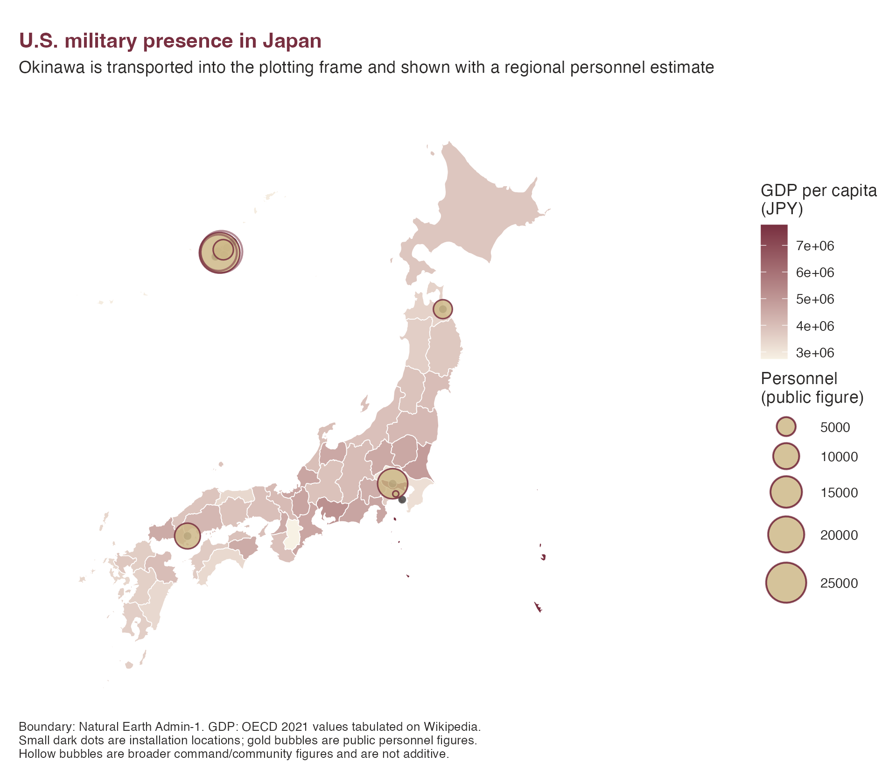
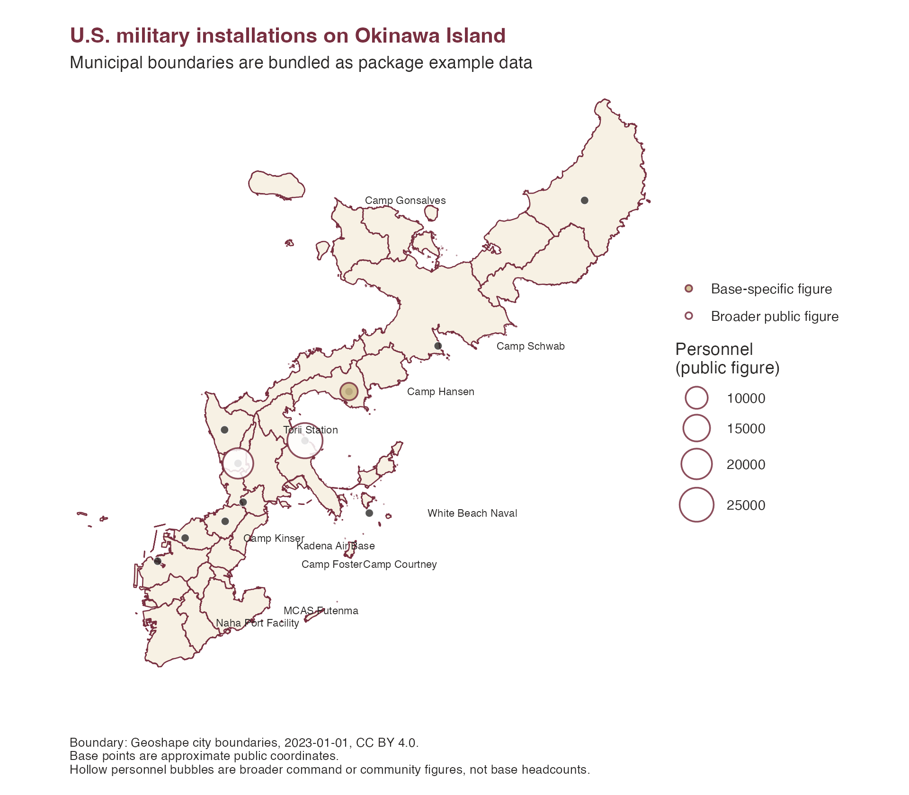

U.S. Military Bases and Prefecture GDP
Source:vignettes/us-military-bases.Rmd
us-military-bases.RmdThis example combines two sample datasets:
-
jp_prefecture_gdp, used to fill prefectures by GDP per capita. -
jp_us_military_bases, used to draw selected U.S. military installations and public personnel figures where those figures have a clear source.
Installation-level personnel counts are not published consistently. The map therefore uses small dark points for installation locations and larger gold bubbles only for public personnel figures. The Okinawa bubble is a regional personnel estimate, not a count for a single base.
The bundled prefecture boundaries come from Natural Earth. The
package also ships Okinawa municipal boundaries from Geoshape so the
local base example can run on the website. Use
jpmap_build_data() when you need nationwide detailed
municipal boundaries from MLIT N03 data.
library(ggplot2)
library(jpmap)
data("jp_prefecture_gdp")
data("jp_us_military_bases")
example_data_dir <- system.file("extdata", package = "jpmap")
bases_xy <- jpmap_transform(
jp_us_military_bases,
output_names = c("x", "y")
)
personnel_xy <- bases_xy[
!is.na(bases_xy$personnel) &
bases_xy$personnel_geography %in% c("regional", "installation"),
]
context_xy <- bases_xy[
!is.na(bases_xy$personnel) &
bases_xy$personnel_geography %in% c("command", "installation-community"),
]
okinawa_municipalities <- jp_map(
"municipalities",
include = "Okinawa",
data_year = 2021,
data_dir = example_data_dir,
inset = FALSE
)
okinawa_bases <- jp_us_military_bases[
jp_us_military_bases$prefecture == "Okinawa" &
jp_us_military_bases$base != "Okinawa U.S. military facilities",
]
okinawa_bases_xy <- jpmap_transform(
okinawa_bases,
output_names = c("x", "y"),
inset = FALSE
)
okinawa_bases_xy$point_type <- ifelse(
is.na(okinawa_bases_xy$personnel),
"Location only",
ifelse(
okinawa_bases_xy$personnel_is_base_specific,
"Base-specific figure",
"Broader public figure"
)
)
okinawa_bases_xy$label <- okinawa_bases_xy$base
okinawa_bases_xy$label <- sub("Marine Corps Air Station ", "MCAS ", okinawa_bases_xy$label)
okinawa_bases_xy$label <- sub(" / III Marine Expeditionary Force", "", okinawa_bases_xy$label)
okinawa_bases_xy$label <- sub(" Naval Facility", " Naval", okinawa_bases_xy$label)
okinawa_bases_xy$label_dx <- 8500
okinawa_bases_xy$label_dy <- 0
okinawa_bases_xy$label_dx[okinawa_bases_xy$base == "Camp Gonsalves"] <- -32000
okinawa_bases_xy$label_dy[okinawa_bases_xy$base == "Kadena Air Base"] <- -12000
okinawa_bases_xy$label_dy[okinawa_bases_xy$base == "Camp Courtney / III Marine Expeditionary Force"] <- -18000
okinawa_bases_xy$label_dy[okinawa_bases_xy$base == "Camp Foster"] <- -9000
okinawa_bases_xy$label_dy[okinawa_bases_xy$base == "Marine Corps Air Station Futenma"] <- -13000
okinawa_bases_xy$label_dy[okinawa_bases_xy$base == "Naha Port Facility"] <- -9000
okinawa_view <- jpmap_transform(
data.frame(
lon = c(127.55, 128.35, 127.55, 128.35),
lat = c(26.05, 26.05, 26.85, 26.85)
),
output_names = c("x", "y"),
inset = FALSE
)
plot_jpmap(
"prefectures",
data = jp_prefecture_gdp,
values = "gdp_per_capita_jpy",
data_year = 2021,
data_dir = example_data_dir,
color = "white",
linewidth = 0.25
) +
geom_point(
data = bases_xy,
aes(x = x, y = y),
shape = 21,
size = 2.3,
fill = "#2C2A29",
color = "white",
alpha = 0.75,
stroke = 0.35
) +
geom_point(
data = personnel_xy,
aes(x = x, y = y, size = personnel),
shape = 21,
fill = "#CEB888",
color = "#782F40",
alpha = 0.85,
stroke = 0.7
) +
geom_point(
data = context_xy,
aes(x = x, y = y, size = personnel),
shape = 21,
fill = NA,
color = "#782F40",
alpha = 0.55,
stroke = 0.9
) +
scale_fill_gradient(
low = "#F7F1E4",
high = "#782F40",
name = "GDP per capita\n(JPY)"
) +
scale_size_area(
max_size = 12,
name = "Personnel\n(public figure)"
) +
labs(
title = "U.S. military presence in Japan",
subtitle = "Okinawa is transported into the plotting frame and shown with a regional personnel estimate",
caption = paste(
"Boundary: Natural Earth Admin-1. GDP: OECD 2021 values tabulated on Wikipedia.",
"Small dark dots are installation locations; gold bubbles are public personnel figures.",
"Hollow bubbles are broader command/community figures and are not additive.",
sep = "\n"
)
) +
theme(
plot.background = element_rect(fill = "white", color = NA),
panel.background = element_rect(fill = "white", color = NA),
legend.background = element_rect(fill = "white", color = NA),
plot.margin = margin(12, 12, 12, 12),
plot.title = element_text(face = "bold", color = "#782F40"),
plot.subtitle = element_text(color = "#2C2A29"),
plot.caption = element_text(color = "#2C2A29", hjust = 0, size = 8),
legend.title = element_text(color = "#2C2A29"),
legend.text = element_text(color = "#2C2A29"),
legend.position = "right"
)
The personnel figures are intentionally stored with
personnel_scope and personnel_geography
because public numbers differ in what they count. Treat the dataset as a
reproducible package example rather than an official accounting of U.S.
forces in Japan.
The Okinawa municipal layer lets you inspect the installation locations without compressing them into a single regional symbol. This local map leaves Okinawa in its geographic position and clips the view to Okinawa Island.
ggplot(okinawa_municipalities) +
geom_sf(fill = "#F7F1E4", color = "white", linewidth = 0.25) +
geom_sf(fill = NA, color = "#782F40", linewidth = 0.35) +
geom_point(
data = okinawa_bases_xy,
aes(x = x, y = y),
shape = 21,
size = 2.2,
fill = "#2C2A29",
color = "white",
alpha = 0.8,
stroke = 0.35
) +
geom_point(
data = okinawa_bases_xy[!is.na(okinawa_bases_xy$personnel), ],
aes(x = x, y = y, size = personnel, fill = point_type),
shape = 21,
color = "#782F40",
alpha = 0.85,
stroke = 0.75
) +
geom_text(
data = okinawa_bases_xy,
aes(x = x + label_dx, y = y + label_dy, label = label),
size = 2.35,
color = "#2C2A29",
hjust = 0,
check_overlap = TRUE
) +
coord_sf(
crs = jpmap_crs(),
xlim = range(okinawa_view$x),
ylim = range(okinawa_view$y),
expand = FALSE,
datum = NA
) +
scale_fill_manual(
values = c("Base-specific figure" = "#CEB888", "Broader public figure" = "white"),
name = NULL
) +
scale_size_area(
max_size = 10,
name = "Personnel\n(public figure)"
) +
labs(
title = "U.S. military installations on Okinawa Island",
subtitle = "Municipal boundaries are bundled as package example data",
caption = paste(
"Boundary: Geoshape city boundaries, 2023-01-01, CC BY 4.0.",
"Base points are approximate public coordinates.",
"Hollow personnel bubbles are broader command or community figures, not base headcounts.",
sep = "\n"
)
) +
theme_void() +
theme(
plot.background = element_rect(fill = "white", color = NA),
panel.background = element_rect(fill = "white", color = NA),
legend.background = element_rect(fill = "white", color = NA),
plot.margin = margin(12, 12, 12, 12),
plot.title = element_text(face = "bold", color = "#782F40"),
plot.subtitle = element_text(color = "#2C2A29"),
plot.caption = element_text(color = "#2C2A29", hjust = 0, size = 8),
legend.title = element_text(color = "#2C2A29"),
legend.text = element_text(color = "#2C2A29"),
legend.position = "right"
)